×
Theme:
Light Brown Theme
Light Pink Theme
Grey Theme
Dark Brown Theme
Dark Blue Theme
Layouts:
Character
Tiled
Webcam
Recording Distance:
Extremely Short Distance (about 0.5m)
Short Distance (about 1.3m)
Medium Distance (about 2.3m)
Long Distance (about 4m)
Background:
Light
Dark
Click here to download
a example JSON file.
myKLA2 Detector
v20221128


Editor
Player
Exit
Please stand properly and do not do other actions when detecting the distance.
Loading